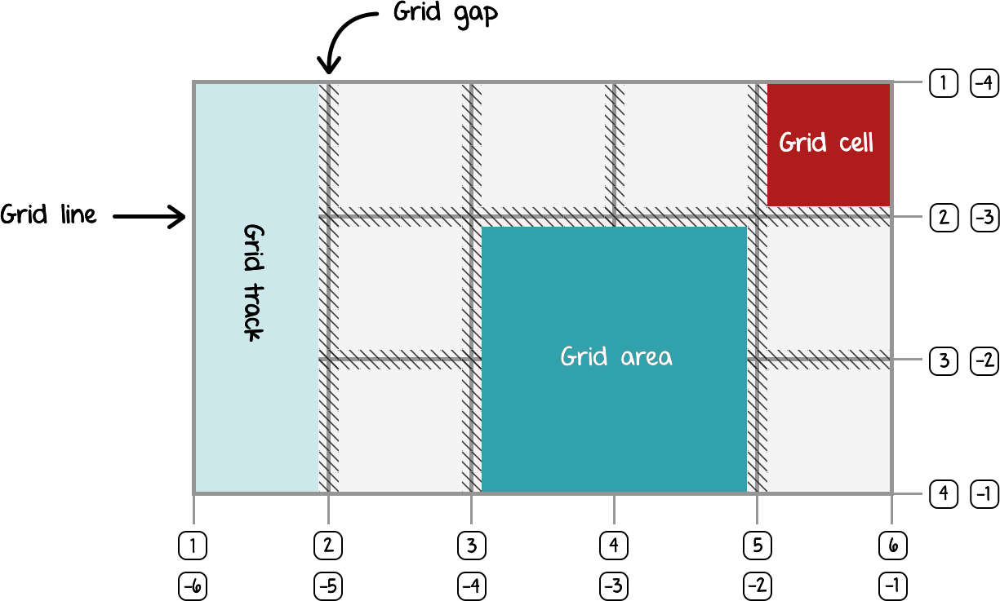
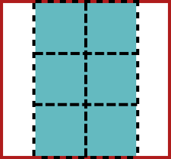
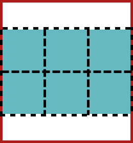
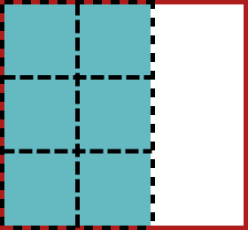
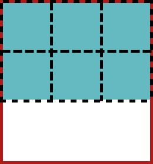
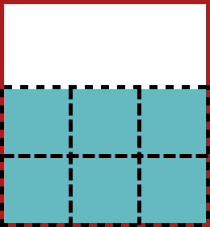
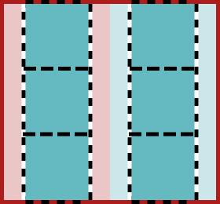
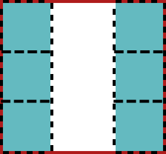
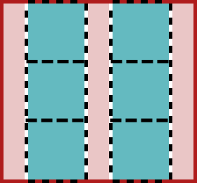
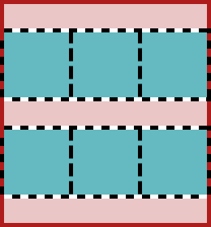

Layout the web with CSS grid
and the rest of team layout
Starter files
https://www.chenhuijing.com/slides/38-ffc-2018/files/grid-workshop-files.zip


Web layouts over the years


Basic terminology
Flexbox and Grid
Based on the container-child relationship
“Grid works from the container in, other layout methods start with the item”
—Rachel Andrew
Layout technique: inline-block
Item A
Item B
Item C
Item D
Item E
Item F
Layout technique: float
Item A
Item B
Item C
Item D
Item E
Item F
Layout technique: flex
Item A
Item B
Item C
Item D
Item E
Item F
“Grid is the only layout technique that establishes a relationship between rows and columns of grid items.”
Properties on the Grid container
Defining a grid
<div class="grid1">
<div class="grid1__item">
<p>Item A</p>
</div>
<div class="grid1__item">
<p>Item B</p>
</div>
<div class="grid1__item">
<p>Item C</p>
</div>
<div class="grid1__item">
<p>Item D</p>
</div>
<div class="grid1__item">
<p>Item E</p>
</div>
<div class="grid1__item">
<p>Item F</p>
</div>
</div>Item A
Item B
Item C
Item D
Item E
Item F
Naming grid lines
Item A
Item B
Item C
Item D
Item E
Item F
Naming grid areas
Item A
Item B
Item C
The fr unit
Represents a fraction of the free space in the grid container.
Item A
Item B
Item C
Fluid CSS grid
.container {
display: grid;
grid-template-columns: repeat(3, 3fr 2fr);
}The minmax() function
Defines a size range for columns or rows in the grid.
Item A
Item B
Item C
The repeat() function
To specify a large number of columns or rows that follow a similar pattern
Item
Item
Item
Item
Item
Item
Item
Item
auto-fill versus auto-fit
A
B
C
D
E
F
Responsive grid without media queries
.container {
display: grid;
grid-template-columns: repeat(auto-fill, minmax(10em, 1fr));
}Properties on the grid item
Using grid-column and grid-row
🍏
🍊
🥥
🥑
🍇
🍌
Using grid-area
Item A
Item B
Item C
Aligning your grid items
| Property | Axis | Aligns | Applies to |
|---|---|---|---|
justify-content |
main/inline | content within element |
block containers, flex containers and grid containers |
align-content |
cross/block | ||
justify-self |
inline | element within parent |
block-level boxes, absolutely-positioned boxes and grid items |
align-self |
cross/block | absolutely-positioned boxes, flex items and grid items |
|
justify-items |
inline | items inside box |
block containers and grid containers |
align-items |
cross/block | flex-containers and grid-containers |
Source: CSS Box Alignment Module Level 3
justify/align-content
content-distribution properties
| Values | justify-content |
align-content |
|---|---|---|
center |
 |  |
start |
 |  |
end |
 | |
space-around |
 |  |
space-between |
 | |
space-evenly |
 |  |
justify/align-self
self-alignment properties
justify/align-items
defaults for justify/align-self
Examples / Demos
Simple responsive dashboard
Artist profile page
Simple responsive dashboard
Artist profile page
Diagonal header
See the Pen The Critical Request header by Chen Hui Jing (@huijing) on CodePen.
Useful references
- CSS Grid Layout Module Level 1
- Codrops CSS Grid reference
- Grid by Example
- Learn CSS Grid
- Grid Auto-Placement Is Ready
- Automatizing the Grid
- Deep Dive into Grid Layout Placement
- CSS Grid Layout and positioned items
- The Story of CSS Grid, from Its Creators
- CSS Grid Layout is Here to Stay
- The New Layout Standard For The Web: CSS Grid, Flexbox And Box Alignment
Thank you!


Font used is Prospectus, by Dave Bailey